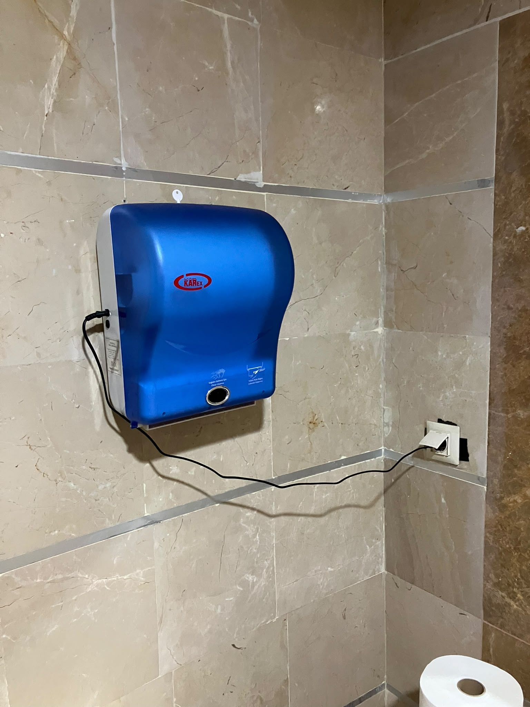

Yusufcan Özdemir 👋
Mühendislik FakültesiYukarıdaki "Sorun Bildir" butonuna basarak arıza iletebilirsiniz.

Sensörlü Havluluk Arızası
Mühendislik B Blok Zemin Kat WC
Sensörlü Havluluk (Karex)
Müh. B Blok Zemin Kat WC
1. Bildirim Alındı
Fotoğraflı arıza kaydı sisteme işlendi (13:35)
2. YZ Teşhisi Yapıldı
Fotosel / PIR hareket sensörü arızası tespit edildi (13:36)
3. Birime Atandı
Yetkili teknik saha personeli görevlendirildi (13:38)
4. Ekip Sahada
Fotosel sensör merceği ve kartı test ediliyor
5. Giderildi & Kapatıldı
Sensör kalibre edildi, cihaz çalışır durumda
"bu aletin önünde elimi sallıyorum ama hiç kağıt vermiyor, prize takılı ama hareket algılamıyor"
Öğrenci kağıt çıkmadığı için kağıdın bittiğini sandı; oysa sorun fotoselde.
Görselde cihaz prizden enerji alıyor. Kağıt rulosu mevcut. Sorun alt oval penceredeki kızılötesi (PIR) fotosel sensör optik arızası veya kart temassızlığı.
Yapay zekânın görsel ve teknik teşhisini onaylayıp elektrik/tesisat personeline iletin.
Öğrenci cihazın adını bilmese bile sadece fotoğrafını çeker; yapay zekâ cihazı ve arızayı görselden teşhis eder, eksik konumu sohbetle tamamlar.
"Öğrenci cihazın adını bilmek zorunda değil; fotoğrafını çeksin yeter."
`PROJECT.md` Bölüm 2.2 ve Bölüm 10.3 gereğince toplanan 142 canlı kampüs testinde form tabanlı sistemler ile SuFix karşılaştırması.
Klasik kategori seçmeli formlarda öğrencilerin %66'sı arızayı yanlış birime (örn. fotosel arızasını "Temizlik") atıyor ve iş emri haftalarca sahipsiz kalıyor.
SuFix görselden ve metinden kök nedeni bularak %94.2 oranında yöneticinin onayladığı doğru birimi tek seferde buldu.
Aynı tuvaletteki havluluk için gelen tekrarlı şikayetler YZ ile birleştirildi; santral kirliliği ve mükerrer personel çıkışı %42.8 engellendi.